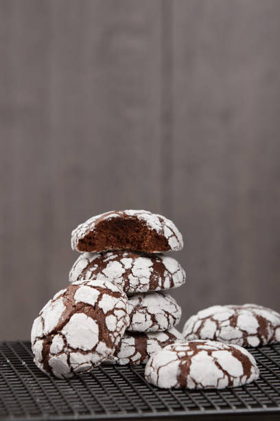
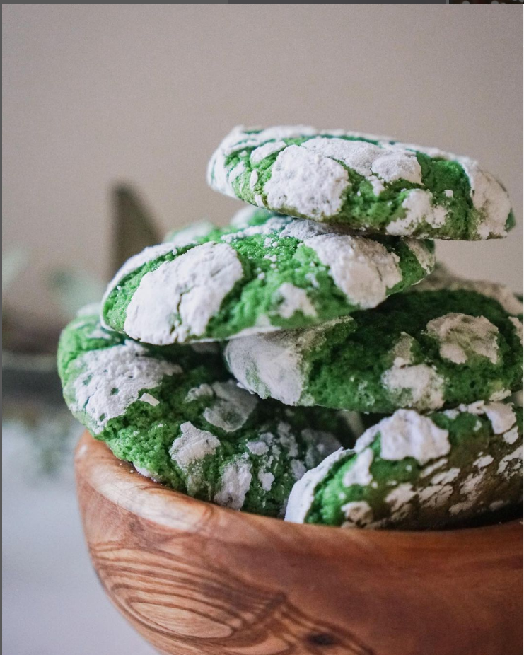
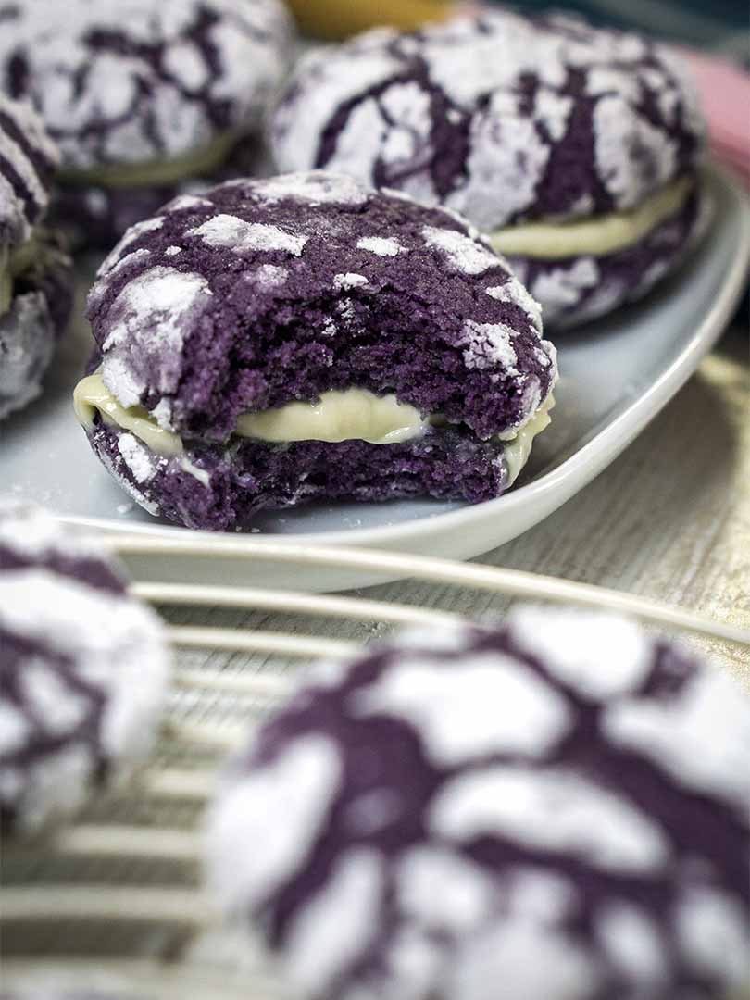

CRINKCLE CULTURE
  As a crinkle cookie business owner, my mission statement is to provide the highest quality, handmade crinkle cookies to our customers. We are dedicated to using only the freshest and finest ingredients to create a delicious and satisfying treat that can be enjoyed by everyone. We aim to create a warm and welcoming environment for our customers, and to provide exceptional customer service with every interaction. Our goal is to not only provide delicious cookies, but also to create a memorable experience that keeps our customers coming back for more.
As a crinkle cookie business owner, I'm happy to say that our crinkles have received a lot of positive feedback from our customers. Many people have complimented us on the unique texture and flavor of our cookies, noting that they are both soft and chewy with just the right amount of sweetness. Some customers have even described them as the best crinkle cookies they've ever had! We take great pride in the quality of our ingredients and the care that goes into making each batch of crinkles, and it's always gratifying to hear that our customers appreciate our efforts.